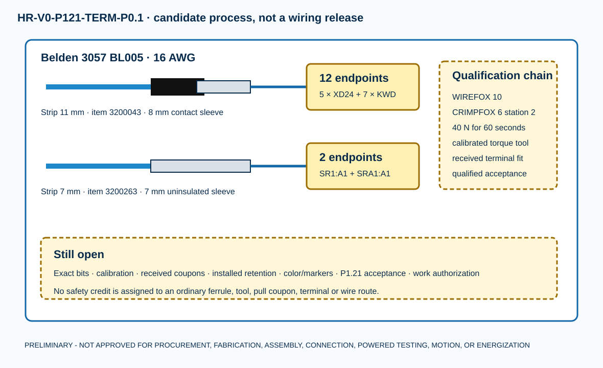

8 mm insulated ferrule candidates for XD24 and KWD
7 mm uninsulated candidates for Pilz A1
Phoenix-published sacrificial crimp-coupon screen
No installed termination or work authority
R242-H02 is only partially addressed. The exact ferrules and primary tools are now named, but received-lot coupons, exact torque bits, calibration, terminal application acceptance, installed retention and qualified review remain mandatory.

Fourteen endpoint candidates
| ID | Endpoint | Ferrule | Conductor strip | Terminal torque N·m | State |
|---|---|---|---|---|---|
| C-01-A | XD24:02 | 3200043 / AI 1,5 - 8 BK | 11 mm | NOT APPLICABLE - PUSH-IN | CANDIDATE - NOT INSTALLED |
| C-01-B | SR1:A1 | 3200263 / A 1,5 - 7 | 7 mm | 0.5 | CANDIDATE - NOT INSTALLED |
| C-02-A | XD24:06 | 3200043 / AI 1,5 - 8 BK | 11 mm | NOT APPLICABLE - PUSH-IN | CANDIDATE - NOT INSTALLED |
| C-02-B | KWD1:A1 | 3200043 / AI 1,5 - 8 BK | 11 mm | 0.7 PROPOSED WITHIN PUBLISHED 0.6 TO 0.8 | CANDIDATE - NOT INSTALLED |
| C-03-A | XD24:07 | 3200043 / AI 1,5 - 8 BK | 11 mm | NOT APPLICABLE - PUSH-IN | CANDIDATE - NOT INSTALLED |
| C-03-B | KWD1:11 | 3200043 / AI 1,5 - 8 BK | 11 mm | 0.7 PROPOSED WITHIN PUBLISHED 0.6 TO 0.8 | CANDIDATE - NOT INSTALLED |
| C-04-A | XD24:09 | 3200043 / AI 1,5 - 8 BK | 11 mm | NOT APPLICABLE - PUSH-IN | CANDIDATE - NOT INSTALLED |
| C-04-B | KWD2:A1 | 3200043 / AI 1,5 - 8 BK | 11 mm | 0.7 PROPOSED WITHIN PUBLISHED 0.6 TO 0.8 | CANDIDATE - NOT INSTALLED |
| C-05-A | XD24:10 | 3200043 / AI 1,5 - 8 BK | 11 mm | NOT APPLICABLE - PUSH-IN | CANDIDATE - NOT INSTALLED |
| C-05-B | KWD2:21 | 3200043 / AI 1,5 - 8 BK | 11 mm | 0.7 PROPOSED WITHIN PUBLISHED 0.6 TO 0.8 | CANDIDATE - NOT INSTALLED |
| C-06-A | KWD1:14 | 3200043 / AI 1,5 - 8 BK | 11 mm | 0.7 PROPOSED WITHIN PUBLISHED 0.6 TO 0.8 | CANDIDATE - NOT INSTALLED |
| C-06-B | KWD2:11 | 3200043 / AI 1,5 - 8 BK | 11 mm | 0.7 PROPOSED WITHIN PUBLISHED 0.6 TO 0.8 | CANDIDATE - NOT INSTALLED |
| C-07-A | KWD2:14 | 3200043 / AI 1,5 - 8 BK | 11 mm | 0.7 PROPOSED WITHIN PUBLISHED 0.6 TO 0.8 | CANDIDATE - NOT INSTALLED |
| C-07-B | SRA1:A1 | 3200263 / A 1,5 - 7 | 7 mm | 0.5 | CANDIDATE - NOT INSTALLED |
Exact tool candidates
| Tool | Item | Purpose | Before use |
|---|---|---|---|
| CRIMPFOX 6 | 1212034 | trapezoidal crimp at marked station 2 for 1.0 to 1.5 mm2 / AWG 18 to 16 | received identity, clean/wear inspection, valid calibration or controlled capability check, operator qualification |
| WIREFOX 10 | 1212150 | prepare 7 mm and 11 mm strip lengths on received Belden 3057 | received identity, blade inspection, setting verification and damage-free strip coupons |
| TSD-M 1,2NM | 1212224 | candidate torque driver covering Pilz 0.5 N m and Phoenix 0.6 to 0.8 N m ranges | current calibration certificate, exact compatible bit for each terminal, access and repeatability verification |
| calibrated axial pull-test fixture and grips | SELECTION REQUIRED | apply and record 40 N for 60 seconds to sacrificial crimp coupons without loading robot devices | range, accuracy, calibration, grip method, sample plan and qualified acceptance |
Why the formats differ
Pilz manual 21396-EN-23 specifies a 7 mm strip and 0.5 N·m for the 750104 screw terminals. Phoenix item 3200263 has a 7 mm uninsulated sleeve. The PTFIX and PLC relay endpoints instead receive the 8 mm contact sleeve of item 3200043. This is a held application candidate, not manufacturer or functional-safety approval.
What remains open
Terminal-manufacturer application acceptance, exact driver bits, calibrated tooling, strip/crimp dimensions on the received conductor, executed coupon tests, installed torque and retention, color/marker disposition, physical inspection, P1.21 acceptance and signed work authorization.